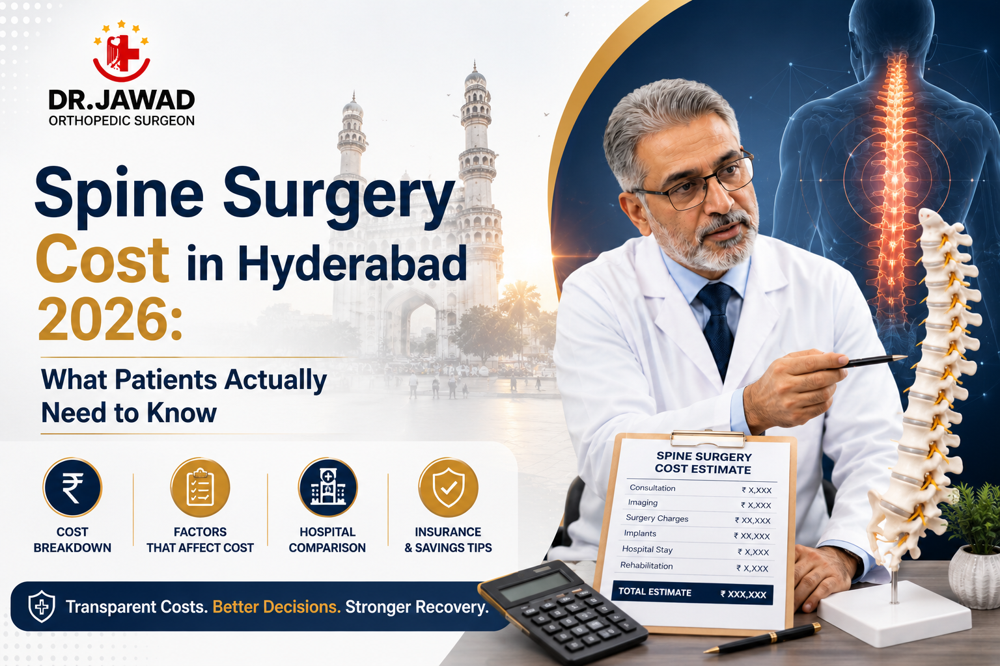

Medically Reviewed by
DR. MIR JAWAD ZAR KHANMBBS, MS - Orthopedic
M.CH-(Ortho) Joint
Replacement surgeon
Spine Surgery Cost in Hyderabad 2026: What Patients Actually Need to Know
When a spine specialist tells you that you may need surgery, the second question most patients ask after "is surgery really necessary?" is almost always: how much will this cost?
It is a completely reasonable question. Spine surgery is a significant medical decision and a financial one too. Yet the answers most patients find online range so widely that they become useless. One website quotes one number, a hospital brochure quotes another, and an aggregator platform offers a figure so low it raises immediate concerns about what it actually includes.
This guide is written to give patients in Hyderabad a clear, honest picture of spine surgery costs in 2026. It covers procedure-wise pricing in Indian rupees, what those figures typically include, what they do not, how insurance affects the final amount, and why the cost of spine surgery should never be evaluated without also evaluating the quality of the surgeon and facility performing it.
Why Spine Surgery Costs Vary So Much
Before any numbers are meaningful, it helps to understand why costs vary so widely across Hyderabad and across India. The following factors all affect the final bill.
The specific procedure: A microdiscectomy for a single herniated disc and a multi-level spinal fusion for severe degenerative disease are both categorised as spine surgery. They have almost nothing in common in terms of complexity, operating time, implants used, or recovery. The cost difference between them can be significant.
Implant type and brand: Spinal implants including screws, cages, rods, and artificial discs vary enormously in cost depending on whether they are domestically manufactured or imported. Some Indian-made implants perform exceptionally well. Imported implants from established German, American, or Swiss manufacturers carry a higher price. The choice of implant should be driven by what is right for the patient's anatomy and condition, and your surgeon should explain their recommendation clearly.
Hospital tier and room category: A corporate hospital in Hyderabad will price differently from a standalone orthopaedic centre. Within any hospital, room charges range from general wards to private and super-deluxe categories. These affect the overall bill significantly even when the surgical cost itself is fixed.
Anaesthesia and OT charges: These are separate from the surgeon's fee and from the hospital room charges. They appear as line items on the final bill and are often not included in headline quotes.
Length of stay: Most minimally invasive spine procedures require only one to two days of hospitalisation. Complex fusion surgeries may require three to five days or more. Every additional day in hospital adds to the total.
Surgeon experience and technology: A senior spine surgeon operating in a facility equipped with 3D C-Arm intraoperative imaging, surgical navigation, and Intraoperative Neurophysiological Monitoring (IONM) will charge more than a general orthopaedic surgeon using basic equipment. This difference reflects a meaningful difference in safety, precision, and outcomes. Understanding the value side of that cost comparison is essential.
Spine Surgery Cost in Hyderabad: Procedure-Wise Breakdown for 2026
The following ranges represent typical all-inclusive package costs at a well-equipped, experienced spine surgery centre in Hyderabad. Actual costs in your case will depend on your diagnosis, the specific surgical approach, implant selection, and length of hospital stay. A detailed cost estimate is always provided after your clinical evaluation.
Microdiscectomy: This is the most commonly performed spine surgery and the gold-standard treatment for sciatica caused by a herniated lumbar disc. It is minimally invasive, typically takes under 90 minutes, and most patients are walking the same day. Approximate cost range: ₹90,000 to ₹2,00,000
Laminectomy or Laminotomy: Performed to relieve nerve compression caused by spinal stenosis, this procedure removes part of the vertebral arch to create space in the spinal canal. Approximate cost range: ₹1,00,000 to ₹2,50,000
Vertebroplasty or Kyphoplasty: Used for vertebral compression fractures, often in patients with osteoporosis. A surgical cement is injected into the fractured vertebra to stabilise it and relieve pain immediately. Approximate cost range: ₹1,20,000 to ₹2,80,000
Single-Level Spinal Fusion (TLIF or PLIF): Fusion surgery permanently stabilises two adjacent vertebrae using bone grafts and metal implants including screws, rods, and an interbody cage. It is used for conditions such as spondylolisthesis, instability, and disc collapse with severe pain. Implant brand choice significantly affects cost. Approximate cost range: ₹2,50,000 to ₹6,00,000
Multi-Level Spinal Fusion: When two or more spinal segments require stabilisation, the complexity, operating time, implant count, and anaesthesia duration all increase accordingly. Approximate cost range: ₹4,00,000 to ₹10,00,000
Cervical Disc Replacement: An artificial disc is inserted in place of a damaged cervical disc, preserving natural neck movement. This procedure uses a premium implant and is typically more expensive than standard cervical decompression. Approximate cost range: ₹2,00,000 to ₹5,50,000
Cervical Laminoplasty or Cervical Fusion: For spinal cord compression in the neck causing myelopathy, decompression surgery is performed either by fusion or by reshaping the lamina. Approximate cost range: ₹2,00,000 to ₹5,00,000
These are honest working ranges. Any quote significantly below the lower end of these ranges for a complex procedure warrants a detailed question about what is and is not included, which implants are being used, and what the surgeon's specific experience with that procedure is.
What a Typical Spine Surgery Package at Our Centre Includes
A well-structured package quote should cover all of the following without surprise additions at discharge.
The surgeon's fee and the assistant surgeon's fee are included. Anaesthesia charges covering the anaesthetist's fee and all anaesthetic medications are included. Operation theatre charges covering the use of the OT, all disposables, and imaging guidance during surgery are included. Hospitalisation charges for the agreed room type and duration are included. Standard post-operative medications during the hospital stay are included. Nursing care and monitoring charges are included. Routine blood work and imaging ordered during the hospital stay are included.
What is typically billed separately includes pre-surgical investigations such as MRI, CT, X-ray, blood work, and cardiac evaluation done before admission. Post-discharge physiotherapy and rehabilitation sessions are billed as they are used. Post-discharge medications taken at home are billed separately. Any complications requiring additional intervention carry additional charges.
When you come in for your consultation, the team will provide a written cost estimate specific to your procedure, implant recommendation, and preferred room category before you make any decision.
Does Health Insurance Cover Spine Surgery in Hyderabad?
Most major health insurance policies in India cover spine surgery when it is medically necessary and recommended by a specialist. The following points are important for patients managing costs through insurance.
Cashless hospitalisation is available with most major insurers at our facility. This means the insurance company settles the bill directly with the hospital and you pay only the co-payment or non-covered items at discharge. It is important to verify that your insurer has a tie-up with the facility before admission.
Pre-authorisation is required by nearly all insurers before an elective spine surgery. This involves submitting the surgeon's recommendation, relevant imaging reports, and a cost estimate to the insurance company for approval. Our team assists patients through this process.
Policy exclusions vary. Some policies exclude spinal implants above a certain cost or require a specific waiting period for orthopaedic procedures. Reading your policy document carefully and speaking with your insurer before booking surgery saves confusion later.
Employees' State Insurance (ESIC) and Central Government Health Scheme (CGHS) both cover spine surgery at empanelled facilities. Patients under these schemes should confirm empanelment status directly with the facility before planning admission.
Should You Choose the Cheapest Spine Surgery Option?
This is a question worth addressing directly. When it comes to spine surgery, the cheapest option is rarely the wisest one.
The spine houses the spinal cord and nerve roots. A procedure that goes wrong in this region can result in chronic pain, nerve damage, weakness, or in severe cases, permanent disability. These are not outcomes that a discounted package offsets.
The variables that most affect spine surgery outcomes are the surgeon's experience, the technology available in the operating theatre, and the quality of post-operative care. All three of these have a cost. A surgeon with 26 years of experience, operating with 3D C-Arm imaging, surgical navigation, and IONM monitoring in a well-staffed facility, costs more than a less experienced surgeon operating without these tools. That difference is meaningful and measurable in outcomes.
The right question to ask is not which spine surgery in Hyderabad is cheapest. It is which combination of surgeon, facility, technology, and care gives you the best chance of a good outcome at a cost that is transparent and reasonable.
Our facility provides detailed, itemised cost estimates before any procedure. There are no hidden charges added at discharge. And the cost includes access to the full range of technology and senior surgical expertise described above.
Non-Surgical Options: When Surgery Can Be Avoided Altogether
It is worth noting that not every patient who enquires about spine surgery cost ends up needing surgery. At our centre, the first step is always a thorough assessment to determine whether a non-surgical pathway can deliver the same result.
Our non-surgical spine treatment programme covers physiotherapy, image-guided epidural steroid injections, nerve root blocks, facet joint injections, and ESWT for chronic back pain. Many patients with disc herniations, sciatica, and early spinal stenosis achieve complete pain relief through these approaches without ever needing an operation.
For patients who do require surgery, a complete picture of surgical options and what each involves is available on our spine surgical treatment page. An overview of Dr. Jawad's spine surgery expertise is on the best spine surgeon in Hyderabad page. Patients dealing with sciatica specifically can read about all treatment pathways on our sciatica treatment in Hyderabad page.
For patients who want guidance on how to evaluate spine surgeons and what to look for before committing to treatment, our blog on who is the best doctor for spine surgery in Hyderabad covers this in detail.
How to Get an Accurate Cost Estimate for Your Spine Surgery
The only way to get a genuinely accurate cost estimate is to come in for a consultation with your imaging reports and receive a clinical assessment. Online cost calculators and telephone quotes are always approximate because the cost depends on details that can only be determined after examining you and reviewing your MRI or CT scan.
At your consultation, you will receive a clear diagnosis, a recommended treatment plan, all available surgical and non-surgical options with their respective outcomes, and a written cost estimate specific to your procedure, room preference, and implant choice. You will have full opportunity to ask questions before making any decision.
Book a consultation today. Bring your MRI or CT reports if you have them. Our team will confirm your appointment within 24 hours.
Frequently Asked Questions
What is the typical spine surgery cost in Hyderabad for a slipped disc?
A microdiscectomy for a herniated lumbar disc causing sciatica typically costs between ₹90,000 and ₹2,00,000 at a well-equipped facility in Hyderabad, depending on implants used, room category, and length of stay.
Is spine surgery covered by insurance in Hyderabad?
Yes, most health insurance policies cover medically necessary spine surgery. Cashless hospitalisation is available with most major insurers. Pre-authorisation is required before elective procedures. Our team assists with all insurance-related documentation.
Why does spinal fusion cost more than a microdiscectomy?
Spinal fusion is a significantly more complex procedure involving bone grafts, metal implants (screws, rods, and cages), longer operating time, and a longer hospital stay. The implants alone contribute substantially to the total cost, particularly when imported instrumentation is used.
Are there any hidden costs I should know about?
At our facility, the written cost estimate provided before surgery covers all in-hospital costs. Items billed separately include pre-admission investigations, post-discharge physiotherapy sessions, and post-discharge medications. These are clearly communicated upfront.
What if I cannot afford spine surgery right now?
If cost is a concern, we will work with you to explore all available non-surgical options first. Many conditions that appear to require surgery can be managed effectively with injections, physiotherapy, and structured conservative care. Financing and payment options can also be discussed at the time of consultation.
Does cheaper spine surgery mean lower quality?
Not necessarily, but it requires careful scrutiny. Ask what implants are being used, whether IONM will be active during surgery, how many procedures the surgeon performs annually, and what is and is not included in the quoted price. A significantly below-market quote for a complex procedure is almost always explained by one or more of these factors.


DR. MIR JAWAD ZAR KHAN
MBBS, MS - Orthopedic, M.CH-(Ortho) Joint Replacement Surgeon
As the visionary Chairman and Managing Director of Germanten Hospitals, Hyderabad, Dr. Mir Jawad Zar Khan brings over two decades of surgical leadership to the field. He is dedicated to transforming lives through evidence-based treatments, advanced robotic technology, and a commitment to patient quality of life.